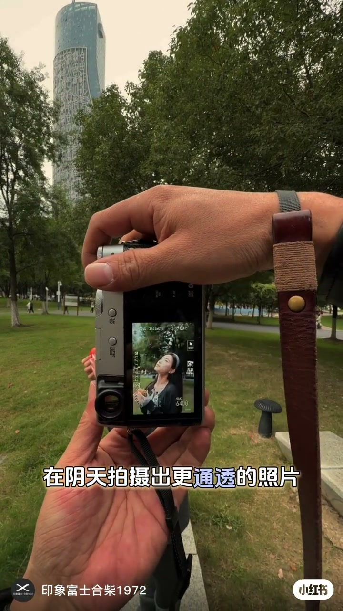
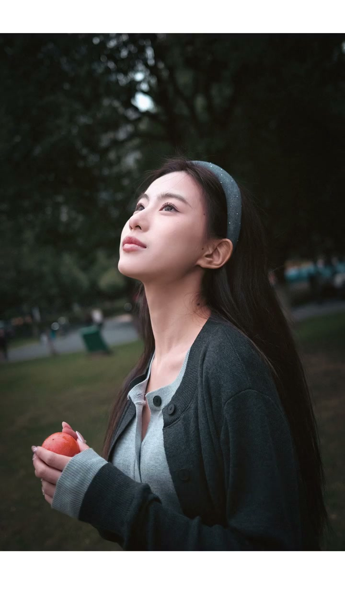
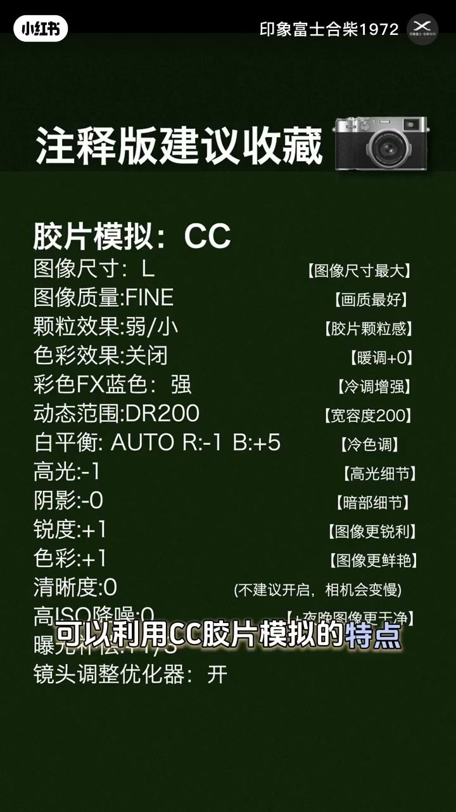
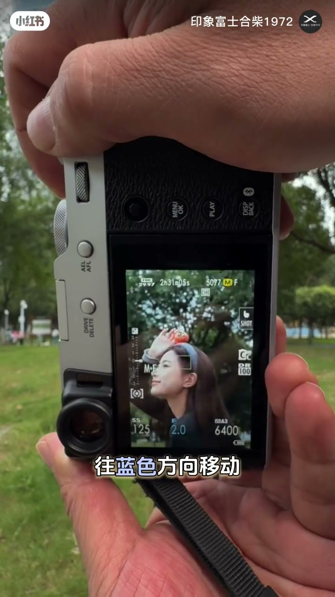
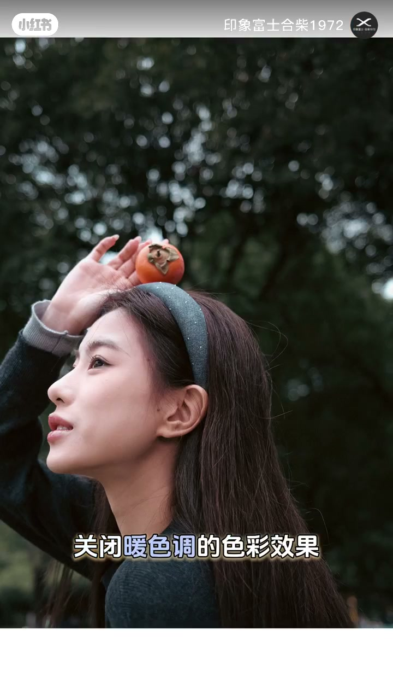
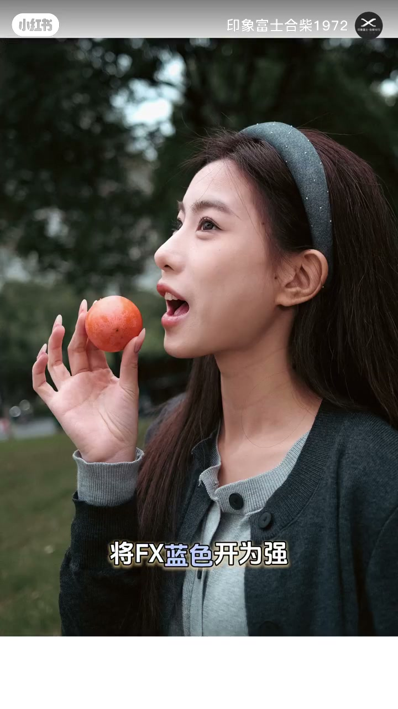
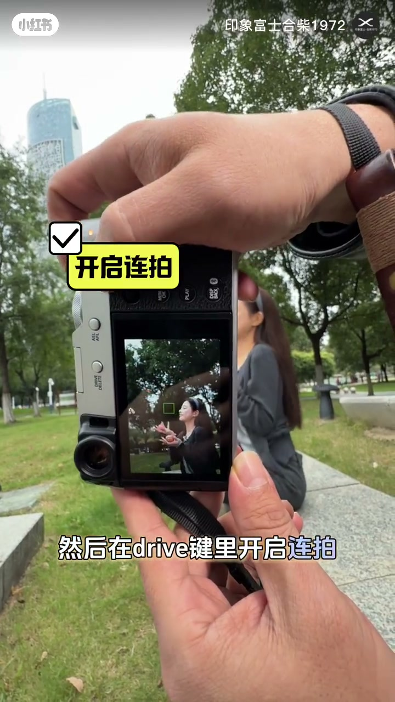
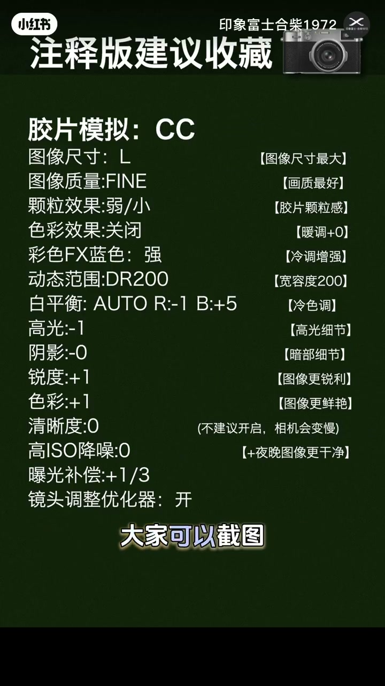

内容要点
「印象富士合柴1972」在公园阴天现场，用富士相机（口播ASR误作「副摄像机」）演示如何让阴天人像更通透、不发黄：先用CC胶片模拟让皮肤偏白皙，再把白平衡漂移往蓝色推，关闭暖色调的色彩效果，并把彩色FX蓝色开到强，用冷调抵消阴天肤色发黄。随后提醒X100VI也可做变焦拍摄，并在Drive键开启连拍提高成功率；片尾给出带注释的配方表供截图。笔记文案另写：阴天不建议用NC。
知识结构
阴天要更通透、不泛黄；先借CC胶片模拟的肤色特点。
白平衡漂移偏蓝；关闭暖色色彩效果；彩色FX蓝色开强，抵消阴天发黄。
Drive开连拍；片尾注释版配方可截图；文案提示阴天慎用NC。
阴天去黄的核心是「冷一点」：CC底 + WB偏蓝 + 关暖色色彩效果 + FX蓝加强；连拍与注释配方负责把设置落到可复制操作。
00:00–00:08目标：阴天拍得更通透、不发黄
开场是第一人称持机画面：银黑机身（形态接近X100系列）对准公园里手持柿子的模特，字幕写「就可以让你的富士相机」「在阴天拍摄出更通透的照片」。口播对齐：简单几步让富士相机在阴天拍出更通透、不那么泛黄的照片。
随即切入成片人像：冷调绿树、肤色偏白，红橙道具对比明显。作者说可以利用CC胶片模拟的特点，皮肤相对会更加白皙——先选模拟，再谈微调。


00:08–00:20CC胶片模拟 + 白平衡偏蓝 + FX蓝
画面切到深绿色「注释版建议收藏」参数表：胶片模拟CC，并列出颗粒、动态范围、白平衡等。口播与字幕同步推进三步：白平衡漂移往蓝色方向移动；关闭暖色调的色彩效果；将彩色FX蓝色开为强（ASR写成「开为墙」，结合字幕与配方表应为「强」）。
作者总结：这样可以让画面抵消阴天的皮肤泛黄。现场穿插模特咬柿子、FX蓝开强等画面，让观众直接对照「冷调增强」后的肤色观感。笔记文案补充：不建议用NC拍阴天——本片口播未展开NC对比，记为作者立场。




00:20–00:32连拍提高成功率与可截图配方
口播提到X100VI也可以设置成变焦拍摄，不懂可留言；接着「在drive键里开启连拍」，可让拍摄成功率更高。画面出现黄色气泡「开启连拍」，持机对准坐姿模特。
结尾回到注释版配方全表，字幕催「大家可以截图」。表内关键去黄相关项包括：色彩效果关闭（注释写暖调+0）、彩色FX蓝色强（冷调增强）、白平衡AUTO R:-1 B:+5（冷色调），以及曝光补偿+1/3等。作者说后面有注释其相对作用——本视频以展示表为主，未逐项口头细讲。
胶片模拟 CC · 色彩效果 关闭 · 彩色FX蓝色 强
白平衡 AUTO R:-1 B:+5 · 动态范围 DR200 · 曝光补偿 +1/3
颗粒 弱/小 · 高光 -1 · 锐度 +1 · 色彩 +1 · 清晰度 0（不建议开，机身变慢）


详细文字转录
以下内容按 Whisper 原始分段完整呈现，可能包含识别误差。正文已按画面字幕校正「副摄像机→富士相机」「开为墙→开为强」「飘移→漂移」等明显同音错字；转录区保留原始识别结果。
-
简单几步就可以让你的副摄像机在阴天拍摄出更通透的照片
-
不会显得照片那么泛黄 可以利用CC胶片模拟的特点 皮肤相对会更加的白皙
-
然后用白平衡飘移 往蓝色方向移动关闭 暖色调的色彩效果 将FX蓝色开为墙
-
这样可以让你的画面抵消阴天的皮肤泛黄 其实X100VI也可以设置成变焦的拍摄 不明白的可以留言去问我 然后在drive键里开启连拍
-
可以让你的拍摄成功率变得更高 给大家准备的胶片模拟配方后面有注视它的相对的作用 大家可以截图 我们下期见 拜拜